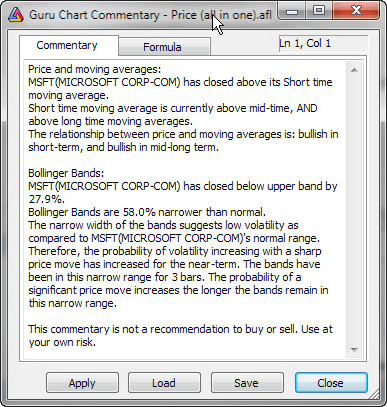

Commentary window enables you to view textual descriptions of the actual technical situation in a given market.
Commentaries are generated using formulas written in AmiBroker's own formula language. You can find the description of this language in AmiBroker Formula Language Reference Guide.
Moreover, the Commentary feature also gives you a graphical representation of buy & sell signals by placing marks (arrows) on the price chart.
Newbies should read "Tutorial: How to write your own commentary" for step-by-step instructions and guidance on working with AFL editor.
"Refresh" button causes AmiBroker to reinterpret the commentary using
currently selected symbol/date.
"Load" and "Save" buttons allow you to load/save commentary
formulas.
"Close" button closes the commentary window.
Now the Guru chart commentary window is automatically updated and synchronized with the date selected on the chart using the "Pick" selector tool. This way you can easily read any indicator value on any selected date right off the chart commentary window.